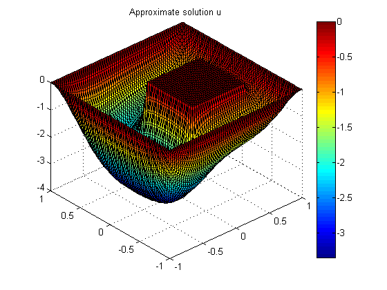
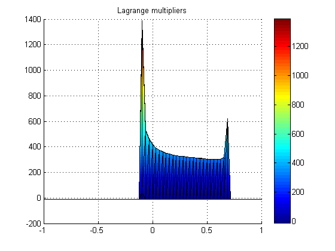

Contents
CODE FOR My MASTER THESIS WORK "Interior point method for the numerical simulation of the obstacle problem"
(c) Serbiniyaz Anyyeva, Sommersemeter 2007
selbiniyaz(at)yahoo.com
function min_obstacle
clc; clear all; % Geometry is imported from the workspace file load geometry_square.mat; hs=inf; % for structured mesh [coordinates,edges,triangles]=initmesh(geom, 'Hmax', hs); for i_refin=1:6 [coordinates,edges,triangles]=refinemesh(geom,coordinates,edges,triangles); end kappa = 1.; Theta = 0.5; % precision for the Newton iterations tau = 0.9; k = 0; iter=[]; % stores iteration number, corresponding kappa value and newton iterations number N = size(coordinates,2); % number of nodes in mesh eps = 0.1/sqrt(N); % precision for the interior point method if size(triangles,1) == 4 triangles(4,:) = [] ; end; N_t = size(triangles,2); % returns the number of triangles in the mesh (number of columns) BoundaryNodes=unique(edges(1:2,:)); Nodes = setdiff(1:N,BoundaryNodes); % these are nodes in mesh excluding boundary nodes u = zeros(N,1); % starting values C = 0.0000000000000001; C1 = 0; pic = 0; % counter for pictures % spparms('spumoni',1) tic; % timer on psi_n = zeros(N,1); for j=1:N psi_n(j) = f_psi(coordinates(:,j)); end grad_u_grad_v = sparse(N,N); f_phi = zeros(N,1); jac=zeros(N_t,1); for j = 1:N_t tri = triangles(:,j); jac(j)=det([1,1,1; coordinates(:,tri')]); % 2 x area of the current triangle grad_u_grad_v(tri,tri) = grad_u_grad_v(tri,tri)+Local_Stiff_1(coordinates(:,tri')); % grad_u grad v integral component f_phi(tri)=f_phi(tri)+ [f(coordinates(:,tri(1)));f(coordinates(:,tri(2)));f(coordinates(:,tri(3)))]*jac(j)/6; end kappa_cond=0; while kappa_cond==0 % here the predictor-corrector iterations begin k=k+1; disp(['CORRECTOR STEP: ', 'k=',int2str(k),' \kappa=',num2str(kappa)]); conv=1; % convergence criterion m=0; % counter for Newton iterations disp('Newton iterations ... '); while conv > Theta % Newton iterations begin m=m+1; A = grad_u_grad_v; b = -grad_u_grad_v*u + f_phi; % Assembly for j = 1:N_t tri=triangles(:,j); bf=1./(u(tri)-psi_n(tri)); % barrier factor A(tri,tri) = A(tri,tri) + kappa * jac(j) * diag(bf.^2)/6; % Stiffnes matrix b(tri) = b(tri) + jac(j) * kappa * bf/6 ; % Right hand side end corr = zeros(N,1); %corr(BoundaryNodes) = 0; %b = b - A * corr; %COMPUTATION OF THE CORRECTOR corr(Nodes)= A(Nodes,Nodes)\b(Nodes); vec = corr./(u-psi_n); Linf_vec = norm(vec,inf); L2_vec = sqrt(sum(vec(triangles).^2,1)*jac/6); if L2_vec>0 C1 = Linf_vec/L2_vec; end C = max(C1,C); alpha = 1; while alpha*Linf_vec >0.99 alpha = alpha/2; end; u = u+alpha*corr; conv=Linf_vec; end iter = [iter; [k, kappa, m]]; clear corr; if kappa<=eps break end disp(['PREDICTOR STEP...']); A = grad_u_grad_v; b = -grad_u_grad_v*u + f_phi; % Assembly for j = 1:N_t tri=triangles(:,j); bf=(1./(u(tri)-psi_n(tri))); % barrier factor A(tri,tri) = A(tri,tri) + kappa * jac(j) * diag(bf.^2)/6; % Stiffnes matrix end pred = zeros(N,1); % COMPUTATION OF THE PREDICTOR pred(Nodes)= A(Nodes,Nodes)\b(Nodes); vecp = pred./(u-psi_n); Linf_vecp = norm(vecp,inf); rho = 0.99; while rho*Linf_vecp > 0.99 rho = 0.9*rho; if rho < 0.001 'small rho....' stop end end; % checking of the condition for rho Xi1=sum(vec(triangles).^4,1)*jac/6; Xi2=sum(vec(triangles).^4.*vecp(triangles),1)*jac/6; Xi3=sum(vec(triangles).^4.*vecp(triangles).^2,1)*jac/6; Xi4=sum(vec(triangles).^2.*vecp(triangles).*(1.+vecp(triangles)),1)*jac/6; Xi5=sum(vec(triangles).^2.*vecp(triangles).^2.*(1.+vecp(triangles)),1)*jac/6; Xi6=sum(vecp(triangles).^2.*(1.+vecp(triangles)).^2,1)*jac/6; Xi=Xi1+2*rho*Xi2+rho*rho*Xi3+2*rho*rho/(1-rho)*Xi4+2*rho^3/(1-rho)*Xi5+rho^4/(1-rho)^2*Xi6; rho1=rho; Xi_min=Xi; while Xi > (Theta/C)^2 if rho1<0.1 rho1=0.7*rho1; else rho1=rho1-0.1; end; if rho1<=0.0001 ' Xi^2 <= (Theta/C)^2 is not satisfied' break end Xi_min=Xi1+2*rho1*Xi2+rho1*rho1*Xi3+2*rho1*rho1/(1-rho1)*Xi4+2*rho1^3/(1-rho1)*Xi5+rho1^4/(1-rho1)^2*Xi6; if Xi_min<Xi rho=rho1; Xi=Xi_min; end end u=u+rho*pred; clear pred; kappa=(1-rho)*kappa; end toc; clear f_phi; c=kappa./(u-psi_n)-10; pic=pic+1; show(pic,triangles,coordinates,u); title('Approximate solution u' ) show(pic+1,triangles, coordinates, c); title ('Lagrange multipliers'); view(0,0); disp('-----------------------------------------------'); disp('Iteration No | kappa | # of Newton iterations'); iter return
Function which computes the local stiffness matrix
function A_elem = Local_Stiff_1(vertices,area)
G = [1,1,1;vertices] \ [0, 0; 1,0; 0,1];
A_elem = det([1,1,1;vertices]) * G * G'/2 ;
return
CORRECTOR STEP: k=1 \kappa=1
Newton iterations ...
PREDICTOR STEP...
CORRECTOR STEP: k=2 \kappa=0.609
Newton iterations ...
PREDICTOR STEP...
CORRECTOR STEP: k=3 \kappa=0.37088
Newton iterations ...
PREDICTOR STEP...
CORRECTOR STEP: k=4 \kappa=0.22587
Newton iterations ...
PREDICTOR STEP...
CORRECTOR STEP: k=5 \kappa=0.11497
Newton iterations ...
PREDICTOR STEP...
CORRECTOR STEP: k=6 \kappa=0.058518
Newton iterations ...
PREDICTOR STEP...
CORRECTOR STEP: k=7 \kappa=0.023934
Newton iterations ...
PREDICTOR STEP...
CORRECTOR STEP: k=8 \kappa=0.0073955
Newton iterations ...
PREDICTOR STEP...
CORRECTOR STEP: k=9 \kappa=0.0015457
Newton iterations ...
PREDICTOR STEP...
CORRECTOR STEP: k=10 \kappa=0.00016848
Newton iterations ...
Elapsed time is 22.640401 seconds.
-----------------------------------------------
Iteration No | kappa | # of Newton iterations
iter =
1.0000 1.0000 13.0000
2.0000 0.6090 1.0000
3.0000 0.3709 1.0000
4.0000 0.2259 1.0000
5.0000 0.1150 1.0000
6.0000 0.0585 1.0000
7.0000 0.0239 1.0000
8.0000 0.0074 1.0000
9.0000 0.0015 1.0000
10.0000 0.0002 1.0000
Function which describes the obstacle
function Obstacle = f_psi(x);
% Obstacle =-1; % horizontal plane %-------------------------------------------------------------- % Obstacle = -0.2*x(1)-0.2*x(2)-0.5; % oblique plane % %----------------------------------------------------------------- % if (abs(x(1))<=0.5) % Obstacle = -2; % elseif (x(1)>-1) & (x(1)<-0.5) % Obstacle = 20*x(1)+8; % elseif (x(1)>0.5) & (x(1)<1) % Obstacle = -20*x(1)+8; % else % Obstacle = -12; % end % %----------------------------------------------------------------- % if (abs(x(1)-0.2)<=0.3) % Obstacle = -2; % else % Obstacle = -20; % end % ------------------------------------------------------------------- if (abs(x(1)-0.3)<=0.4) & (abs(x(2))<=0.4) % piecewise linear Obstacle = -0.2; elseif (x(1)<-0.1 & x(1)>-0.2 & abs(x(2))<=0.4) Obstacle = 100*x(1)+9.2; elseif (x(1)<0.5 & x(1)>0.4 & abs(x(2))<=0.4) Obstacle = -100*x(1)-40.2; elseif (abs(x(1)-0.3)<=0.4 & x(2)<.5 & x(2)>0.4) Obstacle = -100*x(2)-40.2; elseif (abs(x(1)-0.3)<=0.4 & x(2)<-.4 & x(2)>-0.5) Obstacle = 100*x(2)+39.8; else Obstacle = -10.2; end %---------------------------------------------------------------------- % if (x(1)-0.3)^2+x(2)^2<=0.25 % vertical cylinder % Obstacle= 1; % else % Obstacle=-1; % end; %---------------------------------------------------------------------- % if (x(1)-0.3)^2+x(2)^2<=1 % cone, opened % Obstacle= -sqrt((x(1)-0.3)^2+x(2)^2)-2; % else % Obstacle=-100; % end; %------------------------------------------------------------------ % if (x(1)+0.3)^2+x(2)^2<=0.64 % sphere % Obstacle=sqrt(0.64-(x(1)+0.3)^2-x(2)^2)-2; % else % Obstacle=-2; % end % % R=0.7; % if x(1)^2+x(2)^2<=R^2 % sphere % Obstacle=sqrt(R^2-(x(1))^2-x(2)^2)-R-1; % % else % Obstacle=-100; % end % --------------------------------------------------------------------- % if (abs(x(1)+0.3)<=0.8) % horizontal cylinder % Obstacle = sqrt(0.64-(x(1)+0.3)^2)-1; % else % Obstacle = -1; % end %------------------------------------------------------------------------- % Obstacle = sin(pi*(x(1)+1/4))-0.5; return
Function for plotting of the surface on triangular mesh
function show(pic_no,triangles,coordinates,u) figure(pic_no); trisurf(triangles',coordinates(1,:),coordinates(2,:),full(u)','facecolor','interp','FaceLighting','phong'); colorbar; view([-42 40]); % zlim([-10,0]); return 